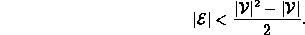
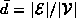

Data Structures and Algorithms
with Object-Oriented Design Patterns in C++
Data Structures and Algorithms
with Object-Oriented Design Patterns in C++
Consider the representation of a directed graph  .
In addition to the
.
In addition to the  Vertex class instances
and the
Vertex class instances
and the  Edge class instances contained by the graph,
there is the storage required by the adjacency matrix.
In this case, the matrix is a
Edge class instances contained by the graph,
there is the storage required by the adjacency matrix.
In this case, the matrix is a  matrix
of pointers to Edge instances.
Therefore, the amount of storage required by an adjacency matrix
implementation is
matrix
of pointers to Edge instances.
Therefore, the amount of storage required by an adjacency matrix
implementation is
On the other hand,
consider the amount of storage required
when we represent the same graph using adjacency lists.
In addition to the vertices and the edges themselves,
there are  linked lists.
If we use the LinkedList class defined in Section
linked lists.
If we use the LinkedList class defined in Section  ,
each such list has a head and tail pointer.
Altogether there are
,
each such list has a head and tail pointer.
Altogether there are  linked lists elements,
each of which consists of a pointer to the next element of the lists
and a pointer to an edge.
Therefore, the total space required is
linked lists elements,
each of which consists of a pointer to the next element of the lists
and a pointer to an edge.
Therefore, the total space required is
Notice that the space for the vertices and edges themselves
cancels out when we compare Equation with Equation .
If we assume that all pointers require the same amount of space,
we can conclude that adjacency lists use less space than
adjacency matrices when

For example, given a 10 node graph,
the adjacency lists version uses less space
when there are fewer than 45 edges.
As a rough rule of thumb,
we can say that adjacency lists use less space
when the average degree of a node, ,
satisfies  .
.
 Copyright © 1997 by Bruno R. Preiss, P.Eng. All rights reserved.
Copyright © 1997 by Bruno R. Preiss, P.Eng. All rights reserved.